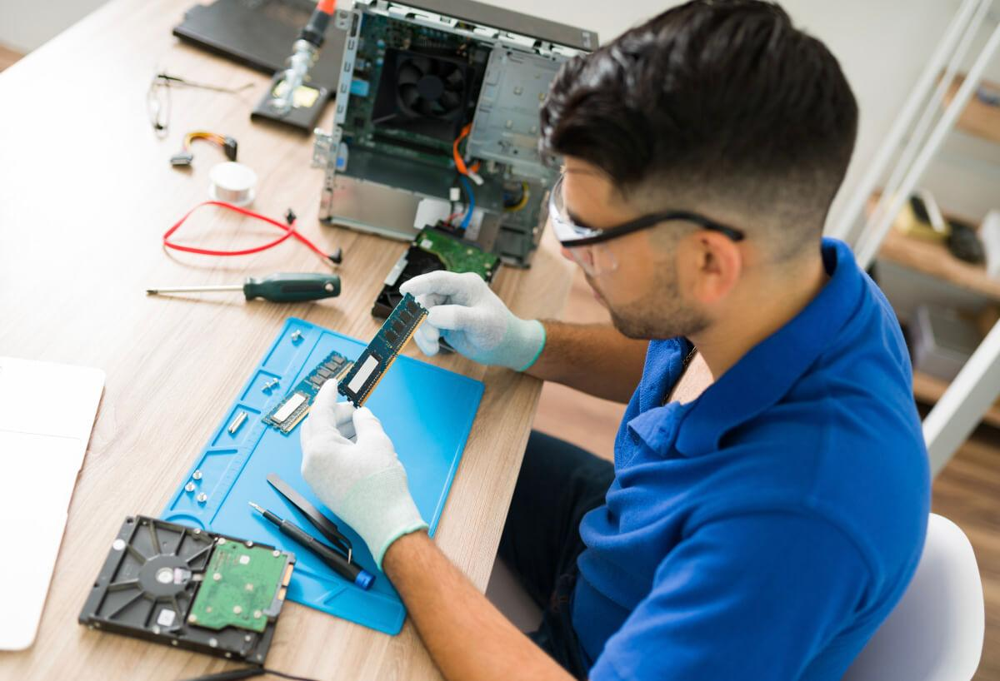

Solution UY
La Solucion Informática
Ubicación
En Solution, estamos ubicados en el corazón de Montevideo, en los alrededores del Nuevo Centro Shopping, una de las zonas más accesibles y dinámicas de la ciudad. Nuestra ubicación estratégica nos permite estar cerca de nuestros clientes y proveedores, facilitando un acceso rápido a nuestras oficinas y brindando una experiencia cómoda para quienes nos visitan.Nuestras oficinas están diseñadas para ofrecer un ambiente profesional y acogedor, pensado para recibir a clientes y colaboradores con total comodidad. Contamos con espacios modernos, equipados con tecnología de vanguardia para garantizar la eficiencia en cada uno de nuestros servicios. Nuestro equipo trabaja en un entorno colaborativo, lo que nos permite atender de manera rápida y eficaz todas las necesidades tecnológicas de nuestros clientes. Además, nuestra cercanía al Nuevo Centro Shopping proporciona un entorno lleno de servicios, restaurantes y tiendas, lo que facilita cualquier gestión que nuestros clientes necesiten realizar en la zona. En Solution, no solo ofrecemos soluciones informáticas, sino también un espacio donde tecnología y atención personalizada se unen para garantizar el éxito de cada proyecto.
Taller Electronico
En el corazón de nuestra empresa se encuentra el taller electrónico, un espacio donde la precisión y la experiencia se unen para devolver a la vida todo tipo de dispositivos. Equipado con tecnología avanzada y herramientas especializadas, nuestro taller es el lugar donde los desafíos técnicos se convierten en soluciones eficaces. Cada reparación es tratada con el máximo cuidado y dedicación por nuestros técnicos, quienes poseen una sólida formación en electrónica y un amplio conocimiento en componentes de hardware. Desde placas madre hasta fuentes de alimentación y circuitos complejos, nuestro equipo aborda cada problema con una metodología rigurosa que asegura resultados de alta calidad. Nuestro taller no solo se destaca por la capacidad técnica, sino también por su compromiso con la transparencia y la honestidad en cada diagnóstico. Sabemos que una reparación precisa puede marcar la diferencia entre un equipo desechado y uno que recupere su funcionamiento óptimo, y por eso cada caso es tratado de manera personalizada y detallada. Si tu equipo necesita una intervención especializada, nuestro taller electrónico es el lugar donde la experiencia y la tecnología se encuentran para brindarte una solución confiable y duradera.
